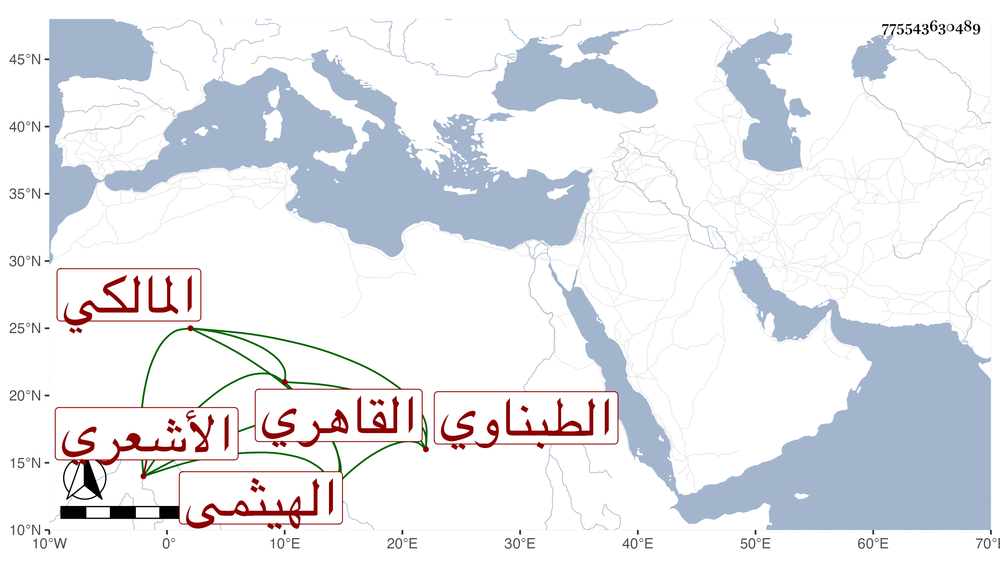

0902Sakhawi.DawLamic.ITO20230111-ara1.EIS1600.775543630489
Biography ID: 775543630489
975
علي بن محمد بن أحمد بن يوسف بن محمد نور الدين الهيثمي ثم الطبناوي القاهري المالكي الأشعري ويعرف يالطبناوي . ولد في أول القرن بمحلة أبي الهيثم ونشأ بها فقرأ القرآن عند البرهان السنهوري المالكي وجوده عليه بل تلاه لأبي عمرو وحفظ عنده الرسالة الفرعية واشتغل يسيرا وأخذ الميقات عن الشمس محمد بن حسين الشرنبابلي وصحب ناصر الدين الطبناوي وأخته أم زين الدين عائشة المدعوة ريحان وبالقاهرة الشيخ محمدا الكويس وقال إنه كان من الأبدال وقرأ فيها الثلثين من شرح الرسالة للفاكهاني على المجد البرماوي الشافعي ولازمه حتى قرأ عليه ألفية ابن مالك وقواعد ابن هشام وصحيح البخاري بتمامها وأخذ أيضا عن الشمس البرماوي وكذا قرأ في الفقه والعربية وغيرهما على الزين عبادة وفيهما فقط عن الحناوي وعلى الشمس الحجاري شرح الشواهد للعيني في حياة مؤلفه وتصنيفه على الشفا وعلى ناصر الدين الفاقوسي الصحيح وانتهى في ذي الحجة سنة إحدى وثلاثين بل قرأه على شيخنا وتم في ذي القعدة سنة ثلاث وثلاثين مع مراعاة النسخة اليونينية ووصفه بالشيخ الفاضل البارع القدوة ، وتنزل صوفيا بالأشرفية برسباي أول ما فتحت بعناية جكم صهر الواقف لاختصاصه به ثم تركها وأقام عند الأمير جميل مدة لمزيد اعتقاده فيه حتى كان لا اختيار له معه في مال ولا غيره واشترى له بيتا هائلا ببركة جناق وأوصاه بتزويج زوجته بعده والسكنى بها فيه حسبما بلغني ففعل وحصلت له محنة في أيام الظاهر جقمق وأدخله فيها سجن أولي الجرائم وأقام فيه مدة وكان يقول للساعين في إطلاقه رويدكم ويشير إلى أن شيخه ناصر الدين عين له الأمد في ذلك قبل وقوعه مع نسبته لمعرفة علم الحرف ، والناس فيه فريقان وممن كان حسن الإعتقاد فيه المناوي وأبو السعادات البلقيني وبالغ معي في إطرائه بحيث حملني ذلك على الاجتماع به مرة بعد أخرى وكتبت عنه قوله :
| طريقة أهل الخير كالسيف من يرم | على متنه مشيا يكن مشيه صدقا |
| وإن طريق الصادقين طويلة | ولكن سر الصدق قصرها حقا |
| فإن كنتم من جملة القوم فاصبروا | وإلا فموتوا بالجهالة في الحمقى |
| ومن يدعي الصدق الشريف فإنه | سيكشفه الروياض يذهب أو يبقى |
وقال لي أن له رسائل أراجيز اثنتان في الجيب وثالثة في المقنطرات وكان متقدما في ذلك أقرأه لغير واحد وأن له وسيلة الخدم إلى أهل الحل والحرم في ترجمة ست البنين وغيرها من الفقراء والحمى الأحمدي والرباط الصمدي ضمنه أشياء منها الأبيات المذكورة ، ورأيت له أرجوزة نحو خمسين بيتا كتبها في إجازة لخليل بن إبراهيم بن عبد الرحمن الدمياطي إمام منصور . مات في يوم الجمعة عاشر ربيع الأول سنة ثمان وثمانين وصلي عليه في يومه ودفن بتربة النجم العيني من نواحي جامع آل ملك سامحني الله وإياه .
